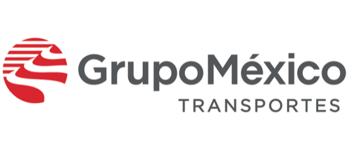

GMXT · FerromexSIMEX App — Rail Operations Mobility
Migration of a legacy desktop application to mobile, tracking In-Gate, Out-Gate, Train-Load and Train-Unload events across 12 intermodal rail terminals.
Challenge solved: many stakeholders and a combined software + hardware scope — aligned through a clear mobile-technology vision for terminal operations.